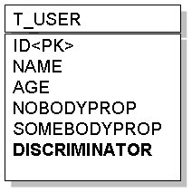
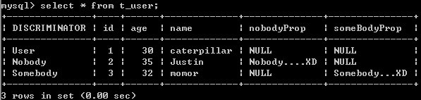

|
|
接續 Table per Concrete Class，來看看繼承關係映射至關聯式資料庫
的第二種方式：Single Table Class Hierarchy。這種方式使用一個表格儲存同一個繼承階層的所有類別，並使用額外的欄位來表示所記錄的是哪一個子類別的資料。 具體來說，對於繼承User類別的Nobody及Somebody，可以設計以下的表格來儲存資料：  現在所決定的是，如果要儲存的資料是來自Nobody，則在DISCRIMINATOR記下一個型態說明，例如"Nobody"字串，表示該筆資料為Nobody實體的對應資料。如果要儲存的資料是來自Somebody，則在DISCRIMINATOR記下一個型態說明，例如"Somebody"字串，表示該筆資料為Somebody實體的對應資料。如果要儲存的資料是來自User，則在DISCRIMINATOR記下一個型態說明，例如"User"字串，表示該筆資料為User實體的對應資料。 在實體類別上，則可以使用InheritanceType.SINGLE_TABLE來設定@Inheritance的strategy（事實上，InheritanceType.SINGLE_TABLE是預設值），並使用@DiscriminatorColumn與@DiscriminatorValue來設定區別類型欄位的名稱與儲存值。 例如，User類別可以如下設計：
package onlyfun.caterpillar; 其中@DiscriminatorValue預設會使用類別名稱，您也可以改用其它的名或名稱，而Nobody與Somebody類別可如下設計：
package onlyfun.caterpillar;
package onlyfun.caterpillar; 同樣記得，在persistence.xml中，要增加這三個類別的<class>標籤，以載入實體類別資訊。 假設您分別儲存了User、Nobody與Somebody實例，則一個MySQL資料庫中的表格狀態如下所示：  缺點就是，因子類別屬性的不同，對映儲存時會有許多欄位為NULL，較浪費資料庫空間，但查詢效率較好，例如查詢User類型的資料時，只需一次SQL，例如這段程式碼： Query query = entityManager.createQuery("SELECT user FROM User user"); Iterator users = query.getResultList().iterator(); while(users.hasNext()) { user = (User) users.next(); System.out.printf("%d\t%s\t%d\n", user.getId(), user.getName(), user.getAge()); } 只會下一次的SQL語句，例如若是Hibernate作為JPA的實作，它會產生以下的SQL語句： select user0_.id as id0_, user0_.age as age0_, user0_.name as name0_, user0_.nobodyProp as nobodyProp0_, user0_.someBodyProp as someBody6_0_, user0_.DISCRIMINATOR as DISCRIMI1_0_ from T_USER user0_ 如果是查詢個別子類型資料，則會以WHERE子句比對DISCRIMINATOR型態，例如： Query query = entityManager.createQuery("SELECT nobody FROM Nobody nobody"); 在Hibernate作為JPA的實作時，會產生以下的SQL語句： select nobody0_.id as id0_, nobody0_.age as age0_, nobody0_.name as name0_, nobody0_.nobodyProp as nobodyProp0_ from T_USER nobody0_ where nobody0_.DISCRIMINATOR='Nobody' |